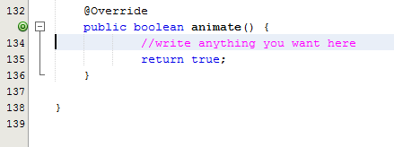

@Override (1)
public boolean animate() {
// write anything you want here
return true; (2)
}CODAPPS
Animating the score and the count of cookies produced per second
'Escape' or 'o' to see all sides, F11 for full screen, 's' for speaker notes
1.The starting point
The files of the app so far:
What we have done so far is simple: a player touching the cookie to add one to the score, or touching buttons to buy tools (auto click, grandma, farm).
But we want an app which is more dynamic: the screen should change "by itself" when time is passing.
For example, when the player buys a grandma, the grandma produces one new cookie per second, automatically.
The score should update every second to show new cookie added, without the player clicking anywhere of course.
2. Introducing the method animate()
How should this automatic update happen? Forms have a special method we can use for this, called animate();
This function is triggered every millisecond. This means that anything we write in this method will happen, every millisecond.
So if we write in it "compute the score and refresh the score on screen", it will happen even if the player did not click on anything.
That’s what we need! Let’s do this:
Adding the "animate()" method
| 1 | This strange @Override annotation means that our custom animate() method will replace the original animate() method of basic forms. |
| 2 | the method will execute every millisecond if it returns true value. If it returns false, nothing is updated. |
Where should this method be written?
Still in our class Form1, write before the curly brace } closing the class:

Figure 1. The animate method should be written in the class Form1
Please note the last curly brace in line 138! This is the one closing the class, after the method. |
For this method to be executed every millisecond, we need one last thing.
→ we must add a line of code at the beginning of the constructor (the method Form1 where we have written most of our code so far):
A line of code to "activate" the
animate() methodpublic Form1() { (1)
registerAnimated(this); (2)| 1 | Don’t write this again, this is is just to show you where the code is |
| 2 | The line of code you should add. |
3. What should be animated? The computation of the score and its display
The app should update the score: compute the new score and show it on screen.
How to compute the score?
grandmas bake a number of cookies per second
farms harvest a number of cookies per second
auto clicks produce a new cookie every 10 seconds (let’s leave this one for the moment)
→ So we should measure when one second has passed and add the numbers of cookies produced.
Let’s create a method dedicated to this computation:
A method to compute the score every second
long lastTimeScoreWasComputed; (1)
private void computeScore() { (2)
long currentTimeInSeconds = System.currentTimeMillis() / 1000; (3)
long lastTimeScoreWasComputedInSeconds = lastTimeScoreWasComputed / 1000; (4)
if (currentTimeInSeconds != lastTimeScoreWasComputedInSeconds) { (5)
score = score + myParameters.grandmaOwned * myParameters.grandmaProd + myParameters.farmOwned * myParameters.farmProd; (6)
scoreLabel.setText(score + " cookies"); (7)
lastTimeScoreWasComputed = System.currentTimeMillis(); (8)
}
}| 1 | we will need a variable that will keep track of the last time the score was computed. Write this variable at the top of the class |
| 2 | the beginning of the method |
| 3 | there is a static method which provides the time as it is now in milliseconds. We divide it by 1000 to have the time in seconds, and store it in currentTimeInSeconds |
| 4 | we take the last time we computed the score (in milliseconds) and divide it by 1000 to have it in seconds |
| 5 | if the current time is different from the last time we computed the score, it means a second has passed… |
| 6 | … and so we can add to the score: how many grandmas we have x how many cookies each grandma produces + how many farms we have x how many cookies each farm produces |
| 7 | … and we can update the Label showing the score. We had declared this Label scoreLabel in the constructor method Form1. We must displace the declaration of this variable to the top of the file so that it can be referenced from this method. |
| 8 | … and before we leave the method, we update the value for lastTimeScoreWasComputed, so that a new full second will need to elapse before the score is computed again. |
How can this method be executed? Simply by calling it from the animate() method:
Making the method computeScore part of the animation
@Override
public boolean animate() {
computeScore(); (1)
return true;
}| 1 | the method computeScore() will be executed every millisecond! |
Let’s create a method dedicated to this computation.
That’s very easy: we simply take the number of cookies produced per second by the grandmas and farms we own.
A method to compute the number of cookies produced per second
float cookiesPerSecond; (1)
private void computeCookiesPerSecond() {
cookiesPerSecond = myParameters.grandmaOwned * myParameters.grandmaProd + myParameters.farmOwned * myParameters.farmProd;
cookiesPerSecondLabel.setText(cookiesPerSecond + " cookies per second"); (2)
}| 1 | we will need a variable that will keep track of the cookies per second. Write this variable at the top of the class |
| 2 | we had declared a variable called cookiesPerSecondLabel in the constructor method Form1. We must displace the declaration of this variable to the top of the file so that it can be referenced from this method.
== !
How can this method be executed? Simply by calling it from the animate() method, just like we did with computeScore(): |
Making the method computeCookiesPerSecond part of the animation
@Override
public boolean animate() {
computeScore(); (1)
computeCookiesPerSecond(); (1)
return true;
}| 1 | the methods computeScore() and computeCookiesPerSecond() will be executed every millisecond! |
4. Fine-tuning: slowing down the animation
The method animate() runs in loop continuously as fast as it can, so it will be executing the calculus included in computeScore() non stop.
That is a bit unnecessary and the phones risk to heat or to slow down. We don’t need to compute the score every millisecond, once every 100 milliseconds (this is 10 times per second!) is largely enough.
So let’s slow it down:
Adding a delay to animate only every 100 milliseconds
long lastAnimatedTime; (1)
@Override
public boolean animate() {
if (System.currentTimeMillis() / 100 > lastAnimatedTime / 100) { (2)
computeScore(); (3)
computeCookiesPerSecond(); (4)
lastAnimatedTime = System.currentTimeMillis();
return true;
} else {
return false; (5)
}
}| 1 | we will need a variable that will keep track of the last time the animation was performed. Write this variable at the top of the class |
| 2 | if 100 milliseconds have passed since we last animated… |
| 3 | … compute the score |
| 4 | … compute the cookies per second |
| 5 | … if not, return false (no animation takes place) |
This is the final version of our code in the file Form1: you can check it here.
5. Congratulations!
That’s it! You now have a fully functional cookie clicker mobile app!
it remains to add how to get the auto click added (it adds a score point every 10 seconds, so that’s a bit tricky)
you could add many other tools, new features, sound, visual animations… it’s up to you!
and many details could be improved (removing the decimals of the score for instance)
All this work which remains to be done make you realize that the harder might not be the coding itself, but a management issue:
how can I invest all the time and money necessary to develop the app?
what kind of revenues could pay for this cost of development?
how do I manage my team of developers?
what are the critical features my users or customers want? (a better design of the app? A better game play? a tablet version of the app?)
This sort of questions are best answered by getting an education in business and management.
But the experience you gained in mobile development in this course, even very modest, will help you address these questions in a much better way - because you understand better what "mobile development" covers.
This is the end of this course. I hope you enjoyed it. As always, your questions and suggestions for improvement of the course are welcome.
Happy coding!
Clement Levallois
The end
Questions? Want to open a discussion on this lesson? Visit the forum here (need a free Github account).
Find references for this lesson, and other lessons, here.
Licence: Creative Commons, Attribution 4.0 International (CC BY 4.0). You are free to:
copy and redistribute the material in any medium or format
Adapt — remix, transform, and build upon the material
⇒ for any purpose, even commercially.
 This course is designed by Clement Levallois.
This course is designed by Clement Levallois.
Discover my other courses in data / tech for business: http://www.clementlevallois.net
Or get in touch via Twitter: @seinecle